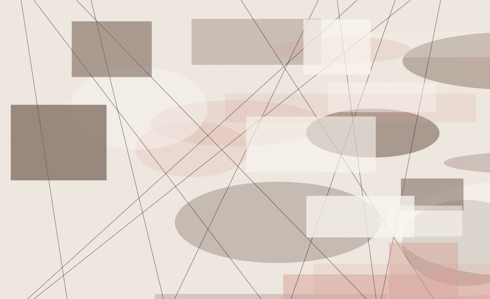
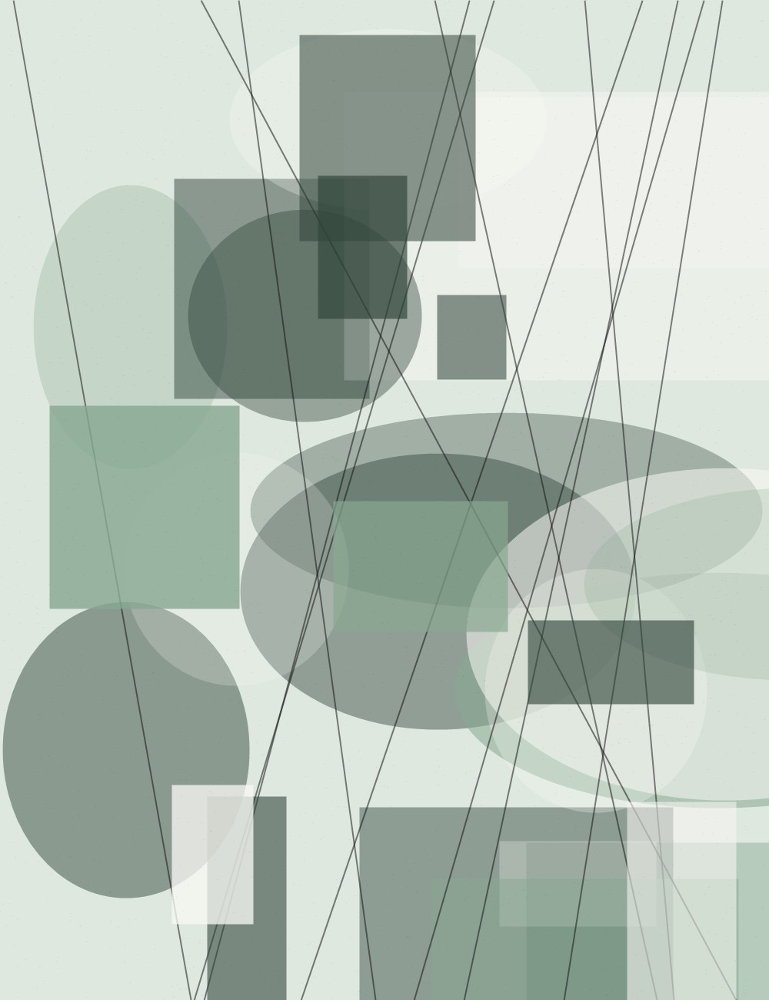
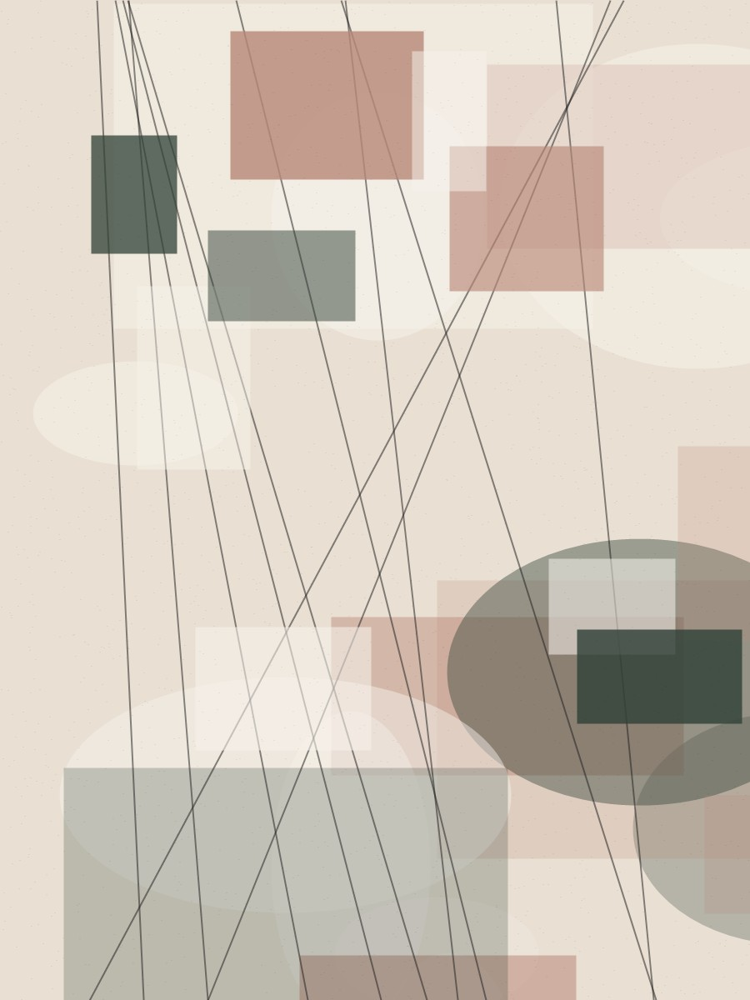
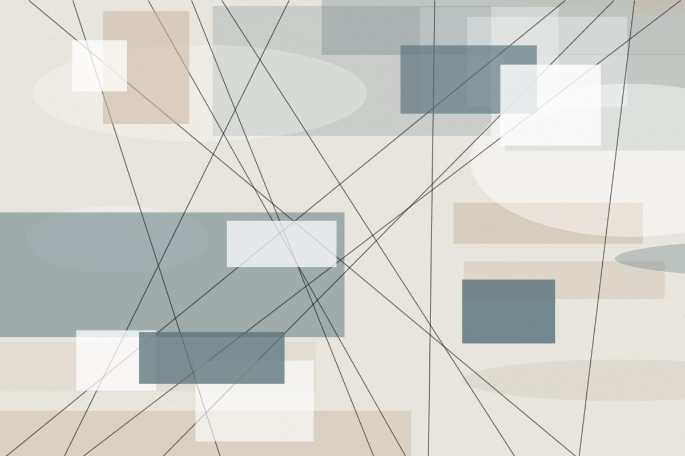

Reality, elevated
Aurel Studio
We shape atmospheric interiors, garden rooms, and visual stories for spaces that feel quietly unforgettable.
→We design soft, sensory spaces where architecture and nature belong to each other.
Use this as a starting point for your studio, portfolio, or brand. The imagery is intentionally local and replaceable, while the layout follows the cinematic, editorial rhythm from your references.
Featured photos
View all photos

